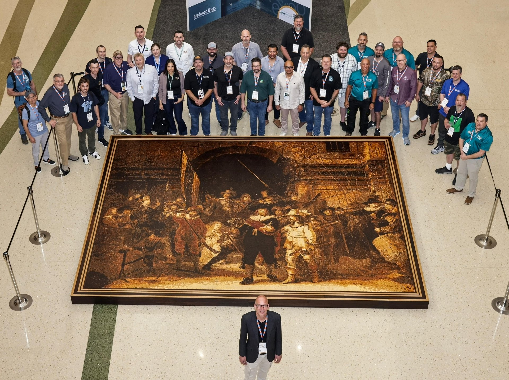
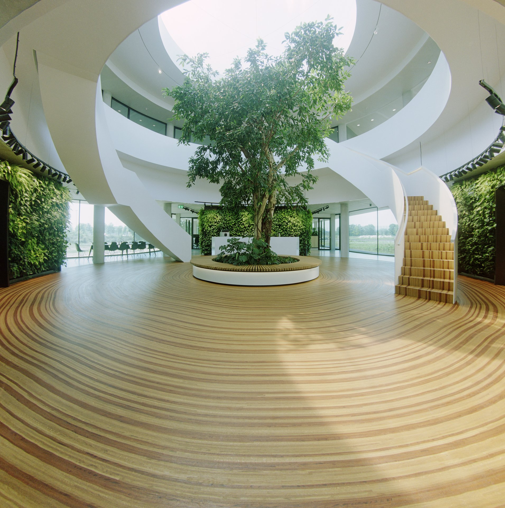
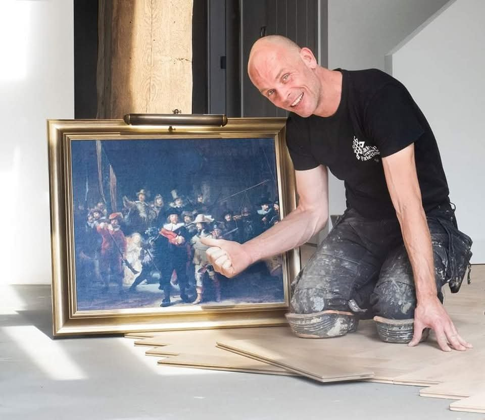
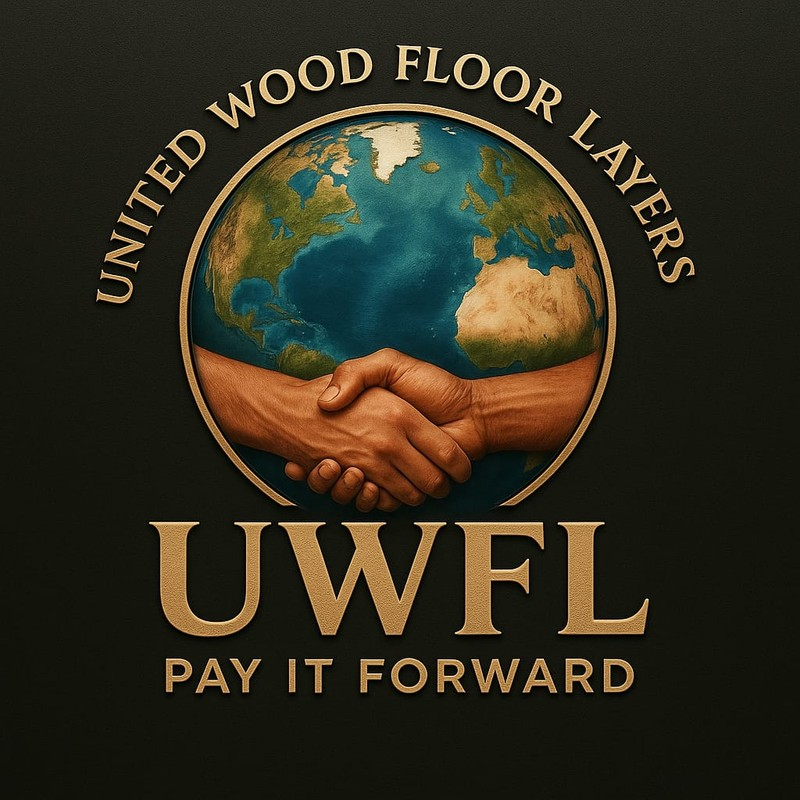

Award-winning art floors that give a building its soul. Conceived for your space, impossible to repeat, and unlike anything else in the world.
Every art floor has a reason why it exists.
I don't make floors to fill a space. Each work starts from an idea — something about the place, the people who'll stand on it, the story a building wants to tell. That's what separates an art floor from a design floor: it means something, and it keeps meaning it long after it's laid. It's why no two are alike, and why a space that holds one is never quite the same again.

Rembrandt's masterpiece rebuilt in wood — not to be looked at, but to be stepped into. Visitors don't come to see the painting. They come to be seen themselves.

© Robbert VogtlanderAn organic floor of growth rings, each one marking a year the company has existed — growth made visible, ring by ring. The name reveals where the work comes from: not from plans, but from intuition.

Jakko Woudenberg is an artist and master parquet craftsman. He works not from plans but from an inner compass, where each work emerges from a unique, unrepeatable moment of his own growth.
That is why nothing he makes can be forced or copied. The work is one of one, because it comes from a moment in a life that never returns.

A worldwide movement of craftspeople. No ego, no money. Just impact. Each maker creates a panel and promises to help three others. Connection, passed forward.
About the movementRare stone, precious wood, a designer name — all of it is for sale, and that is exactly why it says nothing. What I make cannot be bought off a shelf, because it does not exist until I make it for you. One building. One story. One of one. Never anywhere else.
Made to fit a space and make it beautiful. It serves the room — and it can be repeated endlessly, in a thousand buildings at once, because it carries no story of its own.
Decoration · repeatableBegins with a why. It tells a story and moves something in the person standing on it. And because that story belongs to one place and one moment, it can never be repeated, never reproduced.
Meaning · one of oneA design floor can be repeated. This cannot. That is the difference between decoration and art.
A building has no soul without its floor. I make that floor tell your story — woven into the wood itself, the way INSSAEI carries one ring for every year a company has existed. It keeps telling that story, every day, long after I am gone.
A space that holds a Dutch Wood Artist floor is no longer one of many. It becomes the reason people visit, photograph, and remember. Not a purchase — a landmark.
Skilled hands exist — I work alongside them. What is rare is the rest: imagining what has never been made, the nerve to begin without knowing the way, and building a story through the process itself. That is where my work begins, and it cannot be copied.
Every work is born from a single, unrepeatable moment — conceived for your space, shaped to its lines, and made once. It will never be repeated, never reproduced, never found anywhere else on earth.
I don't fit the categories, and I stopped trying to. Not a floor layer, not a designer, not quite a gallery artist. What I make sits somewhere of its own. Monumental, walkable artworks in solid wood, each one starting from a why instead of a pattern. There's nothing to compare it to, and that's exactly the point. The work stands on its own, the way the things that matter usually do.
It also means you do not need to know how this works before you begin. You bring a place, a question, or simply the feeling that something here should be unrepeatable. The rest is mine to carry.
Not a design brief, but a conversation. What this place is, what it should hold, what it should make people feel when they stand on it. The meaning comes first; the wood follows.
I take the why away and let it become an image — shaped to your space, your story, your light. You see where it is going before a single piece is cut.
Built by hand, from solid wood, for one place on earth. When it is finished it cannot be repeated, reproduced, or found anywhere else. It is yours, and it stays.
For architects, headquarters, museums and private spaces that want what cannot be bought twice.